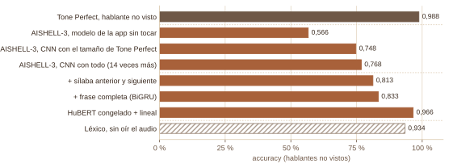
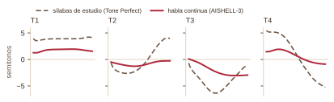
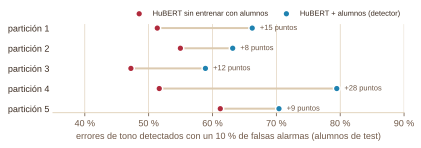
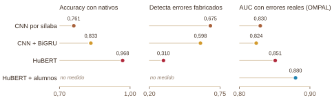
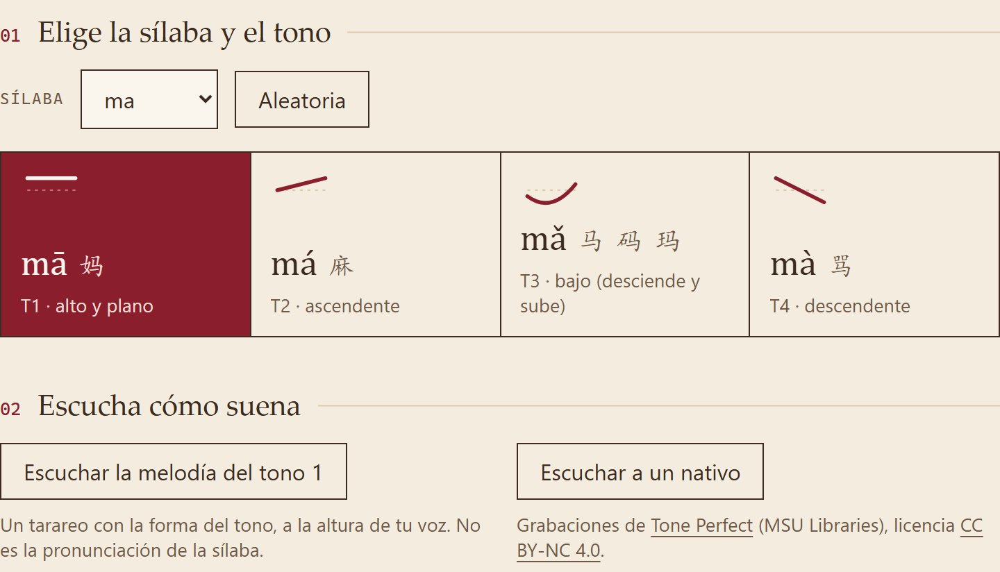
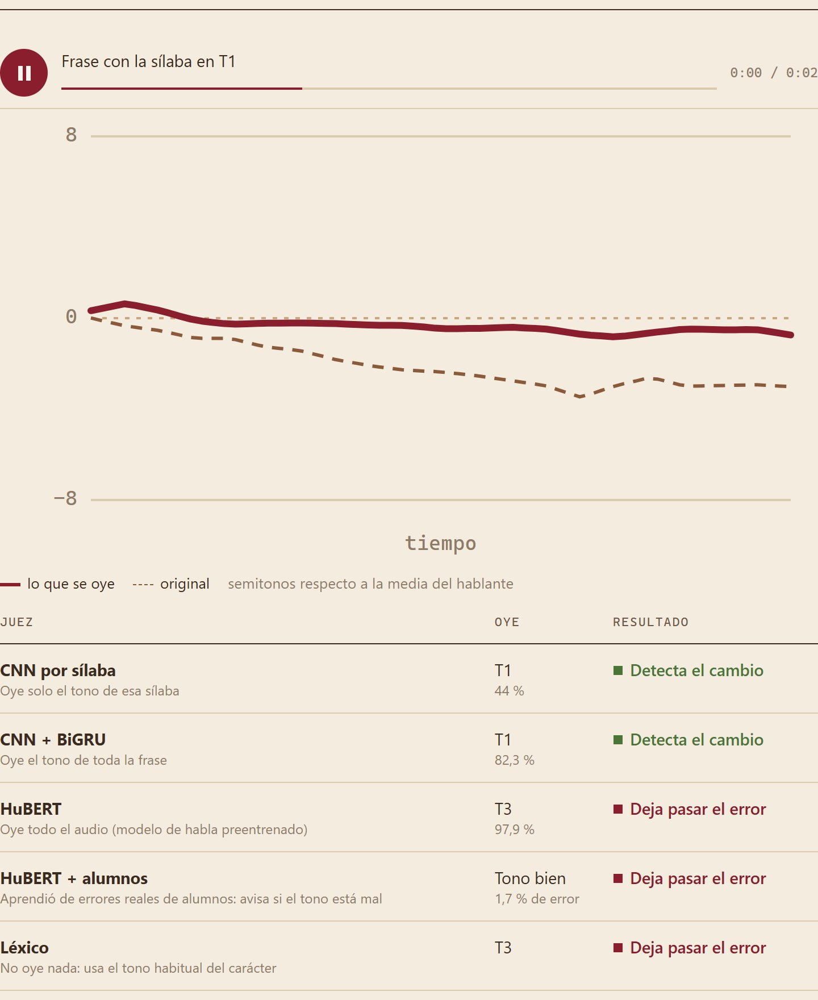

Un entrenador de tonos para hispanohablantes, y lo que se aprende al preguntar no cuánto acierta un modelo, sino si sirve para corregir a un alumno.
Este trabajo construye una aplicación para practicar los cuatro tonos del mandarín. El alumno graba una sílaba, ve su curva de tono frente a la objetivo, escucha su propia voz con la entonación corregida y recibe un veredicto de un clasificador. Para elegir ese clasificador se compararon tres familias de modelos (gradient boosting sobre rasgos de F0, una CNN sobre el contorno de F0 y HuBERT congelado con una sonda lineal) a lo largo de una escalera de dominio: sílabas de estudio de 6 nativos (Tone Perfect, 0,988 de accuracy con hablante no visto), habla continua de 40 nativos (AISHELL-3, donde el modelo cae a 0,566 y HuBERT llega a 0,966) y errores reales de 46 alumnos francófonos marcados por profesores (OMPAL).
El resultado central es metodológico. Los mismos jueces quedan en órdenes distintos según cómo se evalúen. Con nativos gana HuBERT. Con errores fabricados por resíntesis, cambiando el tono de una sílaba con WORLD, gana la CNN, que detecta el 67,5 % de los cambios frente al 31 % de HuBERT. Con errores reales, HuBERT vuelve a quedar primero (AUC 0,859 frente a 0,831, diferencia pareada por hablantes de +0,028 [0,016; 0,040]), y con la misma tasa de falsas alarmas los tres jueces casi empatan. Entrenar directamente la pregunta de la app con los errores de los alumnos sube la detección del 53 % al 68 % con un 10 % de falsas alarmas, en las cinco particiones oficiales del corpus. Ese mismo detector es el que peor detecta los errores fabricados. La conclusión es que la accuracy con nativos y los errores sintéticos no predicen la validez de un juez de pronunciación: hay que medirlo con errores reales.
Palabras clavetonos del mandarín · corrección de pronunciación asistida por ordenador · validez de la evaluación · HuBERT · contrafactuales · F0
This project builds an application to practise the four Mandarin tones: the learner records a syllable, compares their pitch curve with the target, hears their own voice resynthesised with the correct intonation and gets a verdict from a classifier. Three model families (gradient boosting on F0 features, a CNN on the F0 contour and frozen HuBERT with a linear probe) were compared along a domain ladder: studio syllables from 6 native speakers (Tone Perfect, 0.988 accuracy on unseen speakers), continuous speech from 40 native speakers (AISHELL-3, where the app model drops to 0.566 and HuBERT reaches 0.966) and real errors from 46 French-speaking learners annotated by teachers (OMPAL).
The main finding is methodological: the same judges rank differently depending on how they are evaluated. HuBERT wins on native speech; the CNN wins on errors fabricated by resynthesis (it detects 67.5% of tone swaps against 31% for HuBERT); on real errors HuBERT ranks first again (AUC 0.859 vs 0.831, speaker-paired difference +0.028 [0.016, 0.040]) and, at equal false-alarm rate, the three judges nearly tie. Training the app's actual question on learner errors raises detection from 53% to 68% at a 10% false-alarm rate across the corpus's five official splits, yet that detector is the worst at catching fabricated errors. Native accuracy and synthetic errors do not predict the validity of a pronunciation judge: it has to be measured on real errors.
KeywordsMandarin tones · computer-assisted pronunciation training · evaluation validity · HuBERT · counterfactuals · F0
En mandarín, la altura de la voz distingue palabras: 妈 (madre), 麻 (cáñamo), 马 (caballo) y 骂 (regañar) solo se diferencian por el contorno de su frecuencia fundamental (F0). Para un hispanohablante, cuya lengua usa la entonación para la frase y no para la palabra, es uno de los aspectos más difíciles de aprender, y también uno de los que menos se puede practicar sin un profesor delante. La idea de partida del proyecto era sencilla: una aplicación que escuche una sílaba, diga qué tono ha oído y enseñe cómo corregirlo.
Construirla obliga a elegir un juez, el modelo que decide si el tono es correcto, y la forma habitual de elegirlo es la accuracy con hablantes no vistos. El trabajo empezó así, con tres familias de modelos que en sílabas de estudio rozan el techo (entre 0,983 y 0,990). La pregunta cambió al subir la escalera de dominio. En habla continua el mejor modelo con diferencia era HuBERT, pero una línea base que no oye el audio y solo mira el carácter acertaba el 93,4 %. Esa cifra plantea la duda de fondo: un juez puede acertar el tono que corresponde a la palabra sin oír el tono que el alumno ha producido, y eso es justo lo que no puede hacer un corrector.
La pregunta de investigación es, por tanto, cómo se sabe si un juez automático sirve para corregir la pronunciación de los tonos, y si la accuracy con nativos lo predice. Para responderla se evaluaron los mismos jueces de tres formas: con habla nativa, con errores fabricados por ordenador y con errores reales de alumnos anotados por profesores.
El trabajo aporta cuatro cosas. La primera es un pipeline de F0 y tres clasificadores evaluados siempre con hablantes no vistos, con intervalos por bootstrap de hablantes. La segunda, una escalera de dominio que separa el efecto del estilo de habla del efecto del alumno, con una línea base léxica que mide cuánto se puede acertar sin oír. La tercera, dos experimentos contrafactuales y su contraste con 17.001 sílabas de alumnos reales, que invierte la conclusión de los contrafactuales. La cuarta, la aplicación, desplegada, con práctica de sílabas, voz corregida y una demo en la que cualquiera puede cambiar el tono de una frase y ver qué juez se da cuenta.
La sección 2 sitúa el trabajo. Las secciones 3 y 4 describen los datos y el método. Las secciones 5 a 7 recorren la escalera, de las sílabas de estudio a los errores reales, y la 8 reúne la tesis. La 9 describe la aplicación, la 10 las decisiones y sus límites, y la 11 cierra con las conclusiones.
Los cuatro tonos léxicos del mandarín se describen por su forma: el primero es alto y plano, el segundo sube, el tercero baja y en aislamiento vuelve a subir, y el cuarto cae desde arriba. Esa descripción vale para sílabas leídas con cuidado. En habla continua los tonos se influyen entre sí: Xu (1997) mostró que el tono anterior arrastra el inicio de cada sílaba y que el siguiente modifica su final de forma distinta, y a eso se suman reglas como el sandhi del tercer tono, que convierte un T3 seguido de otro T3 en algo parecido a un T2. El resultado práctico es que un mismo tono no tiene un contorno fijo, y que un clasificador entrenado con sílabas aisladas aprende formas que en una frase aparecen comprimidas o deformadas.
Medir esos contornos exige estimar el F0, normalmente con algoritmos como el de autocorrelación de Praat, accesible desde Python con Parselmouth (Jadoul et al., 2018). Los errores típicos son de octava, cuando el estimador elige el doble o la mitad del F0 real, y aparecen sobre todo en la zona grave y con voz rasposa, que es justo donde vive el tercer tono.
La corrección de pronunciación asistida por ordenador suele plantearse como detección y diagnóstico de errores: comparar lo que el alumno dice con lo que debería decir. Para los tonos, Li et al. (2019) entrenaron modelos de tono con etiquetas blandas, precisamente porque los tonos de los aprendices caen a menudo entre dos categorías, y añadieron contexto entre sílabas con una BLSTM. Más recientemente, Wang et al. (2024) combinan HuBERT ajustado con una rama explícita de F0 y, entrenando solo con nativos, evalúan con aprendices. Este trabajo no compite con esos sistemas en cifras: los usa como referencia de que la tarea se aborda con modelos de tono entrenados con nativos y de que el salto a los alumnos es el problema abierto.
Los modelos de habla preentrenados de forma autosupervisada, como HuBERT (Hsu et al., 2021), aprenden representaciones del audio que sirven para muchas tareas con un clasificador sencillo encima. Aquí se usa chinese-hubert-base, preentrenado con 10.000 horas de mandarín de WenetSpeech, congelado y con una regresión logística sobre una de sus capas. Su atractivo es evidente; su riesgo, para un corrector, es que aprende también qué palabra se dice, y la palabra delata el tono.
En procesamiento del lenguaje es conocido que un modelo puede resolver una tarea con atajos. Poliak et al. (2018) mostraron que en inferencia textual un modelo que solo ve la hipótesis, sin la premisa, supera a la clase mayoritaria en varios conjuntos de datos: la tarea se puede responder sin hacer lo que se supone que mide. La línea base léxica de este trabajo cumple el mismo papel para los tonos. Kaushik et al. (2020) propusieron modificar los ejemplos lo mínimo para cambiar su etiqueta y comprobar si el modelo sigue el cambio; los contrafactuales de la sección 6 aplican esa idea al audio, cambiando solo el F0 de una sílaba con el vocoder WORLD (Morise et al., 2016). La aportación de este trabajo es contrastar esa evaluación contrafactual con errores reales, y encontrar que no la confirma.
Se usan tres corpus, cada uno para un peldaño distinto de la escalera. La tabla resume lo que aporta cada uno y con qué licencia.
| Corpus | Contenido usado | Hablantes | Papel en el trabajo | Licencia |
|---|---|---|---|---|
| Tone Perfect (Ryu et al.) | 9.839 sílabas aisladas: 410 sílabas en los 4 tonos | 6 nativos (3 mujeres, 3 hombres) | Peldaño 0, modelo de la app, voz nativa de la práctica | CC BY-NC 4.0 |
| AISHELL-3 (Shi et al., 2021) | 188.743 sílabas de tonos 1-4 en frases leídas | 40 nativos (20 y 20) | Peldaño 1, contrafactuales, demo | Apache 2.0 |
| OMPAL (Hsieh et al., 2025) | 1.768 frases de alumnos y 82 de nativos, tono marcado por carácter | 46 alumnos francófonos y 3 nativos | Peldaño 2: errores reales | CC BY 4.0 |
Tone Perfect son grabaciones de estudio, perfectamente equilibradas (25 % por tono), de las que solo falta una (jiao1_FV3). Tiene dos rasgos que condicionan todo lo demás. Solo hay seis voces, así que cada evaluación deja fuera a un hablante y la dispersión entre ellos importa tanto como la media. Y la duración depende del tono, pero también del hablante: MV1 habla tan rápido que su T3 dura menos que el T1 de FV1.
AISHELL-3 es un corpus de síntesis de voz con 85 horas de 218 nativos, transcrito en caracteres y pinyin. Se descargaron 40 hablantes, equilibrados por género, y se alinearon sílaba a sílaba con el alineador forzado de MMS (Pratap et al., 2024) para extraer cada sílaba con el mismo pipeline de F0 que Tone Perfect. Las etiquetas son los tonos realizados, con el sandhi ya aplicado, y tienen un ruido estimado del 1-2 %.
OMPAL es el único corpus que contiene lo que la aplicación quiere detectar: alumnos que se equivocan. Tres profesores marcan cada carácter de cada frase como tono correcto o incorrecto, y el corpus trae cinco particiones oficiales que separan hablantes (42 en entrenamiento y 5 en test). No incluye los tiempos de cada sílaba, así que se alinearon igual que AISHELL-3, y la revisión a oído de 20 frases (223 sílabas, incluidas las 5 con peor puntuación del alineador) dio los cortes por buenos. Hay dos diferencias con el caso de uso que no se pueden corregir: los alumnos son francófonos, no hispanohablantes, y los caracteres tradicionales sugieren que el mandarín de referencia es el de Taiwán.
El plan inicial incluía grabar entre seis y ocho hispanohablantes con nativos que marcasen sus errores. No fue posible en el plazo del trabajo, y OMPAL es el sustituto más cercano disponible. Esa sustitución es el límite principal del trabajo y se discute en la sección 10.
Cada grabación se carga a 16 kHz, se recortan los silencios y se estima el F0 cada 10 ms. Se compararon pYIN y Praat sobre 960 grabaciones de Tone Perfect: pYIN perdía el 10 % de los T4 y recortaba su caída a unos 6 semitonos, frente a los 11 de Praat, además de cometer errores de octava completos. Praat no perdió ninguna grabación, y su defecto, los saltos de octava, se corrigió en dos pasos. El primero adapta el rango de búsqueda a cada hablante con dos pasadas, limitándolo a [0,5·Q1, 1,5·Q3] de su distribución de F0. El segundo corrige por continuidad: un salto de más de 6 semitonos entre frames consecutivos parte el contorno en tramos, y cada tramo vecino se desplaza un múltiplo de 12 semitonos para unirlo al de referencia. La corrección necesitó tres iteraciones, cada una para arreglar un error visible de la anterior, y deja un residuo aceptado del 4,4 % de T3 y el 3,5 % de T4 con saltos de 6-9 semitonos que no son de octava.
El F0 se expresa en semitonos respecto a la media geométrica del hablante. Esa normalización elimina la diferencia de registro entre voces y conserva la forma. En la aplicación, donde no existe esa media, el alumno graba primero ma en los cuatro tonos y con eso se calcula su perfil de voz. La referencia que sale de esas cuatro sílabas se desvía de la de todo el corpus hasta 2 semitonos, y eso cuesta 0,4 puntos de accuracy (0,984 frente a 0,988). Añadir sílabas con vocales altas, como yi o wu, lo empeora (0,971), porque esas vocales suben la referencia.
El primer modelo es LightGBM sobre rasgos del contorno: diez puntos remuestreados, estadísticos, pendiente, un polinomio de grado 2 y diferencias entre inicio, mitad y final. El segundo es una CNN 1D sobre el contorno remuestreado a 64 puntos y su derivada, con tres bloques convolucionales y una capa lineal sobre el mapa aplanado, sin pooling global, porque lo que separa un T2 de un T3 es dónde está el valle. Se entrena con épocas fijas y sin early stopping, para no elegir el modelo mirando al hablante de test. El tercero es HuBERT congelado con una regresión logística sobre la media de una de sus capas, elegida con validación interna sin ver el hablante de test.
Ningún modelo usa la duración. Con ella, LightGBM pasaba de 0,983 a 0,976 y clasificaba como T4 el 34 % de los T3 de MV1, porque aprendía de los otros cinco hablantes que el T3 es largo. Un atajo así fallaría con alumnos que no hablan al ritmo de estos nativos, por una razón que no tiene nada que ver con el tono.
La aplicación da feedback según la probabilidad del tono objetivo, así que esa probabilidad tiene que significar lo que dice. Se usa calibración por temperatura (Guo et al., 2017), con la temperatura de cada hablante ajustada con las predicciones de los otros cinco para no evaluarla con sus propias etiquetas. La CNN sale bien calibrada de origen (T = 1,28, ECE de 0,004 a 0,001) y LightGBM estaba sobreconfiado (T = 1,65, ECE de 0,011 a 0,002). La calibración no viaja entre dominios: en AISHELL-3, la temperatura de Tone Perfect deja un ECE de 0,322, que baja a 0,017 al reajustarla.
Todas las cifras son con hablantes no vistos: dejando fuera un hablante por fold en Tone Perfect, repartiendo los hablantes en cinco folds en AISHELL-3 y con las particiones oficiales en OMPAL. Los intervalos de confianza al 95 % se calculan remuestreando hablantes, no sílabas, porque la unidad independiente es el hablante y remuestrear sílabas daría intervalos falsamente estrechos. Cuando se comparan dos jueces, ambos usan los mismos remuestreos, y el intervalo de la diferencia es pareado. Los entrenamientos de las redes del peldaño 1 y del contrafactual se repitieron con tres semillas: las tasas varían como mucho 0,007 (desviación típica) y el orden de los jueces se mantiene en las tres.
En Tone Perfect los tres modelos están en el techo: LightGBM 0,983 ± 0,014, la CNN 0,988 ± 0,012 y HuBERT 0,990 ± 0,011, con un hablante fuera por fold. La diferencia entre los dos mejores es del orden de la variación entre semillas, y sus errores son casi disjuntos: de los 121 de la CNN y los 98 de HuBERT solo dos son comunes. Para la aplicación se eligió la CNN calibrada. Pesa 113 KB frente a los cerca de 380 MB de HuBERT, y el contorno que clasifica es el mismo que se le enseña al alumno junto al contorno objetivo.
Esas cifras son de laboratorio. El primer peldaño mantiene a hablantes que pronuncian bien y cambia solo el estilo de habla: las mismas sílabas, extraídas de frases leídas de AISHELL-3 con el mismo pipeline. La figura 1 recorre lo que ocurre.

Sin reentrenar, el modelo de la app acierta el 0,566 y el recall del T2 se hunde a 0,19. La causa se ve en los contornos: en habla continua se comprimen unas cuatro veces. El recorrido medio del T4 pasa de 10,7 a 2,8 semitonos y el del T2 de 6,7 a 1,0, y el T3 pierde la subida final que lo caracteriza en aislamiento (figura 2). Entrenar con AISHELL-3 recupera el rendimiento hasta 0,748 con tantos datos como Tone Perfect, y solo hasta 0,768 con catorce veces más. Una curva de aprendizaje con 4, 8 y 16 hablantes (0,736, 0,750 y 0,765, en un solo fold) apunta en la misma dirección: los datos aportan poco, y el techo de unos 0,77 es de la representación. Un contorno de una sílaba, sin saber qué hay alrededor, no basta. Los peores casos son la última sílaba de la frase (0,63), las más cortas (menos de 181 ms) y el T3 (0,63).

Añadir contexto ayuda de forma clara. Ver la sílaba anterior y la siguiente sube a 0,813 (+4,4 puntos [3,9; 4,9]), una BiGRU sobre las CNN de toda la frase llega a 0,833 (+6,5 [5,9; 7,0]) y HuBERT, que ve todo el audio, a 0,966. Hasta aquí la historia sería la habitual: más contexto, mejor modelo.
La línea base léxica la complica. Prediciendo para cada carácter su tono más frecuente en el entrenamiento, sin oír nada, se acierta el 93,4 %. HuBERT queda solo tres puntos por encima de un modelo sordo. Hay un indicio de que oye algo más: donde el léxico falla por el sandhi del tercer tono (0,79), HuBERT se mantiene en 0,96. Pero la regla del sandhi también se deduce del carácter siguiente, que HuBERT reconoce. La accuracy no puede separar «oye el tono» de «sabe qué palabra es», y para una aplicación que corrige esa es la única diferencia que importa. Hace falta intervenir sobre el audio.
Un contrafactual modifica la entrada lo mínimo para cambiar la respuesta correcta y comprueba si el modelo sigue el cambio. Con WORLD se puede descomponer una grabación en F0, envolvente espectral y aperiodicidad, tocar solo el F0 y volver a sintetizar. Los dos experimentos usan 2.400 frases de AISHELL-3, con clasificadores que no han visto a su hablante, y dos controles: una resíntesis sin tocar el F0, que mide los artefactos del vocoder, y una comprobación de que la manipulación hizo lo que se pretendía.
El primero aplana el F0 de frases enteras. La manipulación funciona: la dispersión del F0 pasa de 2,96 a 0,12 semitonos. HuBERT acierta el 0,964 con el audio original, el 0,953 con la resíntesis sin cambios y el 0,693 con el F0 plano, una caída de 27,1 puntos [25,4; 28,7]. HuBERT sí usa el pitch, por tanto, pero sin ninguna información tonal sigue acertando casi siete de cada diez sílabas. Parte de eso es léxico, parte son pistas que WORLD conserva (duración, intensidad, la voz rasposa del T3) y parte es un sesgo: un F0 plano suena a primer tono, por eso el T1 se queda en 0,88 y el T3 cae a 0,44. El experimento no separa esas tres partes.
El segundo reproduce el error de un alumno. En cada frase se elige una sílaba al azar y se le impone el contorno real de otro tono, tomado de un hablante de otro fold, sin tocar el resto. Un buen juez debería seguir al tono impuesto. Se descartó imponer la media de cada tono porque es un prototipo limpio que favorece a los modelos de F0: en una prueba preliminar la CNN detectaba así el 96 % de los cambios. El contorno reextraído tras la manipulación queda a 0,44 semitonos del impuesto y a 3,04 del original.
| Juez | Acierta con nativos | Detecta el cambio | Deja pasar el error |
|---|---|---|---|
| CNN por sílaba | 0,761 | 0,675 | 0,100 |
| CNN + BiGRU | 0,833 | 0,598 | 0,143 |
| HuBERT | 0,968 | 0,310 | 0,474 |
| Léxico, sin audio | 0,925 | 0,022 | 0,925 |
El orden se invierte respecto a la accuracy. El juez que más acierta con nativos es el que más errores deja pasar: HuBERT responde con el tono que toca según la palabra en el 47 % de los casos. La CNN por sílaba, la peor con nativos, detecta dos de cada tres cambios. En todos los pares de tonos la CNN detecta más que la BiGRU y esta más que HuBERT, y el patrón se repite en las tres semillas. Con estos datos, la conclusión parecía clara: cuanto más contexto y léxico usa un juez, peor corrige, y el mejor corrector es el más simple. La sección siguiente pone esa conclusión a prueba con errores de verdad.
Un error fabricado cambia solo el F0 de la sílaba de un nativo; todo lo demás sigue sonando a nativo. Un alumno que se equivoca de tono probablemente no hace eso: puede dudar, alargar la sílaba o articularla a medias. OMPAL permite medir a los mismos jueces, entrenados con AISHELL-3 y sin haber visto a ningún hablante del corpus, con 17.001 sílabas de alumnos de las que 2.389 (el 14,1 %) tienen el tono mal según la mayoría de los tres profesores. Se excluyen las 526 sílabas de T3 ante T3, en las que no se sabe si lo correcto era T2 o T3.
| Juez | Detecta el error | Falsa alarma (alumnos) | Falsa alarma (nativos) | AUC |
|---|---|---|---|---|
| CNN por sílaba | 0,890 | 0,417 | 0,383 | 0,831 |
| CNN + BiGRU | 0,889 | 0,405 | 0,325 | 0,830 |
| HuBERT | 0,854 | 0,250 | 0,097 | 0,859 |
El resultado contradice al contrafactual. HuBERT es el que mejor separa los tonos bien dichos de los mal dichos, detecta casi lo mismo que la CNN y molesta mucho menos al que lo dice bien: avisa en el 25 % de las sílabas correctas de los alumnos frente al 42 %, y en el 10 % de las de nativos frente al 38 %. La ventaja en AUC es pequeña pero no es ruido. Con los mismos remuestreos de hablantes, HuBERT supera a la CNN en +0,028 [0,016; 0,040] y a la BiGRU en +0,029, mientras que la CNN y la BiGRU son indistinguibles. El defecto que el contrafactual atribuía a HuBERT tampoco aparece por otra vía. Si decidiera por la palabra, debería dejar pasar más errores cuando la consonante y la vocal están bien dichas, porque entonces la palabra se reconoce, y ocurre lo contrario: detecta el 86 % con los segmentos bien y el 78 % con los segmentos mal.
La etiqueta tiene sus propios límites. Los profesores coinciden poco entre sí (kappa de Cohen medio de 0,45); HuBERT llega a 0,35 con cada uno y la CNN a 0,22. Un profesor comparado con los otros dos detecta solo el 58 % de los errores con un 5 % de falsas alarmas: los profesores avisan mucho menos que cualquier juez automático. Se asume, sin poder verificarlo, que la posición de cada voto en el fichero corresponde siempre al mismo profesor.
Avisar cuando el tono más probable no es el esperado pone a cada juez en un punto de trabajo distinto: la CNN avisa mucho y HuBERT poco. Para compararlos en igualdad, se fijó para cada juez el umbral que da un 10 % de falsas alarmas en el entrenamiento de cada partición oficial, y se midió en su test. Con ese criterio, la CNN detecta el 52 % de los errores, la BiGRU el 49 % y HuBERT el 53 %; con un 20 % de falsas alarmas, el 71, el 69 y el 78 %. Buena parte de la ventaja de HuBERT es de punto de trabajo, no de separar mejor. El criterio de la falsa alarma, y no el de maximizar la detección, responde a una decisión de producto: un corrector que marca como error una de cada cuatro sílabas bien dichas desanima al alumno. Pedir pocas falsas alarmas cuesta caro: al 10 %, los tres dejan pasar casi la mitad de los errores.
Ningún juez había oído a un alumno al entrenar. El paso natural es entrenar directamente la pregunta de la aplicación, «¿lleva esta sílaba el tono esperado?», con la etiqueta de los profesores. Se usó una regresión logística por tono esperado sobre el embedding congelado de HuBERT, con la regularización elegida por validación cruzada agrupada por hablante y el umbral fijado con predicciones fuera de fold, en las que cada fold elige también su propia regularización. No se ajustó HuBERT: 46 alumnos y unos 2.400 errores no dan para ajustar 95 millones de parámetros sin sobreajustar.

El detector detecta el 68 % de los errores con un 10 % de falsas alarmas, frente al 53 % del juez HuBERT, y su AUC media por partición pasa de 0,851 a 0,880. Recombinar las probabilidades de los tres jueces existentes da la mitad de esa mejora (61 %), y añadir el contorno de F0 al embedding no aporta nada (66 %). La falsa alarma real en el test oscila entre 0,07 y 0,16 para un objetivo de 0,10, porque cada test tiene solo cuatro alumnos. Entrenado con los 46, el detector de la aplicación da fuera de fold una AUC de 0,890 y detecta el 69 % con el 10 % de falsas alarmas.
La práctica de la aplicación juzga sílabas sueltas con la CNN de Tone Perfect, y OMPAL no tiene sílabas sueltas: su frase más corta tiene cinco. Lo único que se puede medir es una cota inferior, aplicando el mismo modelo y la misma regla a las sílabas de sus frases. En ese formato el juez no sirve: con los nativos de OMPAL acierta el 52 %, así que el salto de dominio domina el resultado, y con los alumnos su AUC es 0,780, por debajo de la CNN entrenada con AISHELL-3 (diferencia pareada −0,052 [−0,063; −0,041]). Esto no dice cómo se porta con una sílaba suelta, que es lo que graba un alumno en la práctica, y deja a la vista el límite más incómodo del trabajo: el juez del producto no tiene ninguna validación con errores reales en su propio formato.
La figura 4 reúne a los mismos jueces medidos de las tres formas. Para que el detector se compare con los demás en las mismas condiciones, el panel de errores reales usa la AUC media en el test de las cinco particiones; con todos los alumnos juntos (tabla 2) el orden es el mismo.

Con nativos el orden es HuBERT, BiGRU, CNN. Con errores fabricados se invierte: CNN, BiGRU, HuBERT. Con errores reales HuBERT vuelve a quedar primero, por poco, y con la misma tasa de falsas alarmas los tres casi empatan. El detector entrenado con alumnos completa el cuadro de la forma más clara. Es el mejor con errores reales y, en las frases de la demo de la aplicación, el que menos cambios fabricados detecta: el 30 %, frente al 52 % de HuBERT y el 88 % de la CNN. Aprendió cómo suena un alumno que se equivoca, y un tono trasplantado sobre la voz de un nativo no se parece a eso.
De la hipótesis inicial del trabajo se conserva que la accuracy con nativos no mide la validez de un juez. Se cae la explicación que daba el contrafactual, que HuBERT deja pasar los errores porque decide por el léxico: era un efecto de cómo se fabricaban los errores. Y se añade que, con errores reales, gran parte de la diferencia entre jueces depende del umbral, y que la mejora grande no viene de cambiar de arquitectura sino de entrenar con los errores que se quieren detectar.
Queda una explicación de por qué se invierte el orden, que este trabajo no verifica. WORLD cambia solo el F0 y deja intactos la duración, la intensidad y la articulación de nativo, así que un modelo como HuBERT, que integra todas esas pistas, recibe señales contradictorias y se queda con la mayoría, que dice «correcto». En un error real, el alumno que no está seguro del tono probablemente también duda o alarga la sílaba, y esas pistas apuntan en la misma dirección que el F0. Es la misma lección que Kaushik et al. (2020) encontraron en texto, ahora en audio: los modelos entrenados o evaluados con una distribución de ejemplos se comportan de otra forma con la contraria.
La aplicación tiene tres pestañas. «Practicar» es el producto: el alumno calibra su voz con ma en los cuatro tonos, elige una de las 1.243 combinaciones de sílaba y tono de Tone Perfect que son palabras reales, puede escuchar antes una guía tarareada del tono a la altura de su propia voz, graba y recibe el veredicto, su curva frente a la objetivo, un consejo sobre la forma del contorno, la voz de un nativo y su propia voz corregida. «¿Quién corrige?» es la demo del hallazgo: frases de AISHELL-3 de hablantes que ningún modelo vio, en las que cualquiera puede cambiar el tono de una sílaba con WORLD y ver qué dicen los cinco jueces (las dos CNN, HuBERT, el detector entrenado con alumnos y el léxico). «Resultados» resume las cifras de este documento, leídas de las salidas de los experimentos y no copiadas a mano. La figura 6, en la página apaisada que sigue a las conclusiones, muestra la práctica y un juicio de la demo.
La voz corregida descompone la grabación con WORLD, sustituye solo el F0 de los frames con voz por el contorno objetivo expresado respecto a la media del alumno y vuelve a sintetizar, de modo que suena como él mismo diciendo el tono correcto y no como un nativo. En 2.400 resíntesis, una CNN que no había visto al hablante reconoce el tono objetivo en el 99,8 % y el F0 queda a 0,2 semitonos del pedido. Es una medida circular, porque un clasificador de F0 reconoce casi por construcción la plantilla que se le ha impuesto, y no dice cómo suena; una evaluación con oyentes queda pendiente. El alcance proponía predecir el contorno objetivo a partir del rango y la duración del alumno, en lugar de usar una plantilla fija; con cinco hablantes de entrenamiento no la supera (2,18 frente a 2,13 semitonos de error), y la aplicación usa la plantilla.
La aplicación tiene una API en FastAPI que no guarda estado, un frontend en React y Vite, límite de peticiones por cliente en las rutas pesadas y 47 tests, entre ellos los de la capa HTTP con dobles de los modelos para no descargar HuBERT. Un flujo de integración continua los ejecuta en Linux con torch de CPU y compila el frontend. Se despliega de dos formas. La imagen Docker (4,3 GB, con HuBERT incluido) se probó en local con un juicio de la demo de 0,18 s. Como los Spaces con Docker son de pago, la versión pública es un Space de Hugging Face con el hardware gratuito ZeroGPU, que construye con Python 3.10 y exige al menos una función que use la GPU. El juicio de la demo corre allí en GPU, con un primer juicio de 4,4 s mientras se asigna y 1,3 s los siguientes, y el análisis de una grabación tarda 4,6 s.
| Decisión | Motivo | Alternativa descartada |
|---|---|---|
| Praat con rango por hablante y corrección por continuidad | Ninguna grabación perdida; corrige octavas sin tocar caídas reales | pYIN (perdía el 10 % de los T4) |
| Sin duración en ningún modelo | Atajo que no transfiere: 34 % de los T3 de MV1 como T4 | Usarla (−0,007 en el total, −0,054 en MV1) |
| Evaluar siempre con hablantes no vistos e intervalos por hablante | El hablante es la unidad independiente | Splits aleatorios; bootstrap de sílabas |
| Línea base léxica sin audio | Es el atajo que un modelo de habla puede explotar | Comparar los modelos solo entre sí |
| Contorno impuesto real y de otra voz en los contrafactuales | La media del tono inflaba la detección de la CNN hasta el 96 % | Imponer el prototipo del tono |
| Umbral por falsa alarma objetivo con alumnos | Compara en el mismo punto de trabajo y protege al alumno | Avisar con el tono más probable |
| Detector lineal sobre HuBERT congelado | 46 alumnos no dan para ajustar 95 M de parámetros | Ajuste fino de HuBERT |
| CNN de Tone Perfect como juez de la práctica | Único juez de sílaba suelta; 113 KB e interpretable | Cambiar de juez sin datos de sílaba suelta con alumnos |
| Space con ZeroGPU y el juicio de la demo en GPU | Docker es de pago; ZeroGPU es gratuito y exige usar la GPU | Static (sin práctica), pago |
El límite principal es que no hay hispanohablantes. La aplicación se diseñó para ellos y la validación con errores reales se hizo con 46 francófonos que leen frases, probablemente en mandarín de Taiwán. Que los resultados se trasladen a hispanohablantes es una suposición razonable, porque ninguna de las dos lenguas es tonal, pero es una suposición. El segundo es que el juez de la práctica no está validado con errores reales en su formato, la sílaba suelta: la cota de la sección 7 dice que fuera de ese formato no sirve, no cómo funciona dentro.
El tamaño efectivo de las muestras es el número de hablantes, no de sílabas: 6 en Tone Perfect, 40 en AISHELL-3 y 46 alumnos en OMPAL, con test de cuatro alumnos y casi siempre el mismo nativo en cada partición. Las diferencias pequeñas entre jueces, aunque tengan intervalo, dependen de esos hablantes. La etiqueta de error es ruidosa (kappa 0,45 entre profesores) y el alineamiento de OMPAL se revisó con un veredicto global, sin una cifra sílaba a sílaba.
Los contrafactuales no son errores reales, y OMPAL lo confirma en lugar de solo sugerirlo. Además, en las frases de la demo los jueces detectan más cambios que en el experimento de 2.400 frases (la CNN, 88 % frente a 67,5 %). Una parte se debía a que la demo imponía el contorno prototípico de cada tono, ya corregido, pero la diferencia que queda no la explican ni el criterio de selección de frases ni los hablantes de la demo. La cifra de referencia es la del experimento, y las de la demo solo sirven para comparar el orden de los jueces. La voz corregida solo se ha evaluado de forma objetiva y circular, y el consejo que da la práctica es una regla sobre la forma del contorno sin probar con alumnos.
Del alcance inicial quedaron fuera el modo juego controlado por la voz y el motor adaptativo, que eran escaparate y opcional respectivamente, para dedicar el tiempo a la validación con errores reales.
El trabajo empezó como una aplicación con un clasificador y terminó como una pregunta sobre cómo se evalúa un corrector. Un clasificador de tonos con 0,988 de accuracy en sílabas de estudio cae a 0,566 en habla continua, y el mejor modelo en ese dominio, HuBERT, queda solo tres puntos por encima de una línea base que no oye. Los contrafactuales parecían demostrar que ese modelo decide por la palabra y deja pasar los errores, y que el corrector bueno era el más simple. Los errores reales de 46 alumnos dicen otra cosa: HuBERT separa algo mejor los tonos bien y mal dichos, con muchas menos falsas alarmas, y con el mismo nivel de avisos los jueces casi empatan. Lo que mejora de verdad es entrenar con los errores que se quieren detectar, que lleva la detección del 53 al 68 % sin aumentar las falsas alarmas.
La consecuencia para quien construya un sistema de corrección es concreta. Elegir el juez por su accuracy con nativos lleva a uno; elegirlo con errores fabricados, a otro; y ninguno de los dos criterios predice el comportamiento con alumnos. Hacen falta errores reales, aunque sean pocos, y conviene usarlos también para entrenar. Unas decenas de alumnos marcados por profesores bastaron aquí para mejorar al juez en las cinco particiones.
El trabajo futuro sigue de esa conclusión. Lo primero es grabar a hispanohablantes con nativos que marquen sus errores, que era el plan original y es la validación que falta, en sílabas sueltas para validar el juez de la práctica y en frases para el detector. Con esos datos se podría entrenar un detector propio de errores de hispanohablantes y recalibrar la aplicación con ellos. En el modelado, quedan por probar el ajuste fino de HuBERT con multitarea (tono con nativos y error con alumnos), una suma ponderada aprendida de sus capas en lugar de una sola, y entrenar con errores fabricados para medir en OMPAL si mejoran la detección de errores reales; si no lo hacen, sería una prueba más de la tesis. En la aplicación quedan la evaluación de la voz corregida con oyentes, el consejo de la práctica probado con alumnos y el modo juego.


El repositorio se instala con uv sync, que reproduce las versiones exactas de uv.lock, y cada cifra de este documento sale de un script numerado que lee los datos y escribe en outputs/. Los corpus no se versionan por su tamaño y licencia, y hay que descargarlos aparte. Los dos notebooks (01_tone_perfect_pipeline y 02_escalera_dominio) explican cada paso y leen esas salidas sin volver a ejecutar los pasos pesados. La tabla da el orden y lo que produce cada grupo.
| Scripts | Qué hacen | Secciones |
|---|---|---|
| 01-03, 21-23 | Tone Perfect: exploración, F0 con corrección de octava, rasgos, LightGBM, calibración y CNN | 4, 5 |
| 04, 24 | Embeddings de HuBERT y sonda lineal en Tone Perfect | 5 |
| 25-28 | Modelo de la app, voz corregida, contorno personalizado y perfil de voz | 4, 9 |
| 09-12, 15, 16 | AISHELL-3: selección y descarga de hablantes, alineamiento, contornos y embeddings | 3, 5 |
| 29-32, 37, 39 | Escalera de dominio, contexto, HuBERT, línea base léxica, curva por hablantes y semillas | 5 |
| 33, 34 | Contrafactuales de F0 plano y cambio de tono | 6 |
| 40-44 | OMPAL: alineamiento, jueces, revisión del alineamiento, profesores, AUC pareada y umbral | 3, 7 |
| 45-49 | Embeddings de OMPAL, detector por partición, detector de la demo, errores fabricados y cota del juez de la práctica | 7, 8 |
| 05-07, 35, 36 | Datos del frontend, paquete de la demo y pestaña de resultados | 9 |
| 38 | Genera el notebook 02 (se ejecuta después con nbconvert) | — |
Las figuras de esta memoria salen de docs/memoria/figuras.py, que lee las mismas salidas. La aplicación se arranca en local con uv run uvicorn tonos.api:app tras compilar el frontend; la imagen Docker y el Space de Hugging Face se describen en el README, junto con el script que monta el Space (deploy/preparar_space.py). Los tests se ejecutan con uv run pytest.
Licencias de los datos: Tone Perfect se redistribuye en la aplicación con atribución y sin uso comercial (CC BY-NC 4.0), lo que condiciona el uso del despliegue público; AISHELL-3 es Apache 2.0 y OMPAL CC BY 4.0, ambos con atribución en la aplicación.